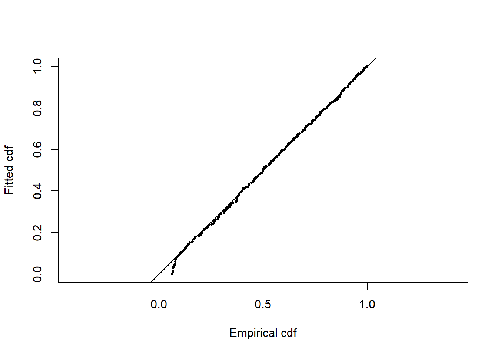

library(Distance)
data("ETP_Dolphin")
bino <- subset(ETP_Dolphin, Search.method<3)Demonstration two stages of model selection
Demonstration
Eastern tropical Pacific dolphin data
After my improvised description of selection of adjustment terms, I thought I should provide a more thorough description via an example. The purpose of the demonstration is to fit models with adjustments to a data set and expose, in detail, all models fitted during the process.
For this demonstration, I require a data set with an interesting shape to the histogram. I will not describe the data set, other than to note it contains roughly 1000 detections. We will see this data set again next week. More complete details of the data set, as well as a detailed analysis are in Marques & Buckland (2003).
Data preparation
I’m only going to use a portion of the detections, as the survey vessel used a combination of observers in various locations on the ship.
What does it mean to include adjustment terms?
When I submit the following code, I am actually requesting that a number of models with a half-normal key be fitted to data. I am leaving it to the ds() function to perform model selection among competing half-normal keys with 0, 1, 2, 3, 4 or 5 adjustment terms.
some.results <- ds(data=bino, key="hn", adjustment="cos")If the model with a single adjustment term is preferable to the model without an adjustment term, then a model with two adjustment terms is fitted and its AIC is compared to the single term model’s AIC. This pattern repeats until the best half-normal with cosine adjustments model is identified in a stepwise fashion.
Candidate models
I wish to fit each of the key functions (uniform, half-normal and hazard rate). In addition, I also wish to include adjustment terms for each of the key functions. I limit my enthusiasm to consider only cosine adjustment terms. The actual number of models that will be fit to the data is unknown at this point.
First round of model selection
The messages echoed to the console by ds() will show the within key function model selection progression.
Half-normal cosine
hncos <- ds(bino, key="hn", adj="cos")Starting AIC adjustment term selection.Fitting half-normal key functionAIC= 2816.871Fitting half-normal key function with cosine(2) adjustmentsAIC= 2805.973Fitting half-normal key function with cosine(2,3) adjustmentsAIC= 2807.589
Half-normal key function with cosine(2) adjustments selected.Three models with the half-normal key are fitted, with the preferred model being the second fitted, namely the model with a single adjustment term.
%%{init: {'theme': 'forest' } }%%
graph TD
D(ds_data, key='hn', adj='cos')
D --> ID0
D --> ID1
D --> ID2
ID0(hn0<br>AIC=2817)
ID1(hn1<br>AIC=2806)
ID2(hn2<br>AIC=2808)
FIN(hn1)
ID0 --> FIN
ID1 --> FIN
ID2 --> FIN
Uniform cosine
unicos <- ds(bino, key="unif", adj="cos")Starting AIC adjustment term selection.Fitting uniform key functionAIC= 2971.022Fitting uniform key function with cosine(1) adjustmentsAIC= 2811.177Fitting uniform key function with cosine(1,2) adjustmentsAIC= 2808.378Fitting uniform key function with cosine(1,2,3) adjustmentsAIC= 2806.685Fitting uniform key function with cosine(1,2,3,4) adjustmentsAIC= 2808.105
Uniform key function with cosine(1,2,3) adjustments selected.The same pattern as with the half-normal key, with a small exception. Four models with the uniform key are fitted, with the preferred model being the third fitted, namely the model with a three adjustment term.
%%{init: {'theme': 'forest' } }%%
graph TD
D(ds_data, key='unif', adj='cos')
D --> ID1
D --> ID2
D --> ID3
D --> ID4
ID1(unif1<br>AIC=2811)
ID2(unif2<br>AIC=2808)
ID3(unif3<br>AIC=2807)
ID4(unif4<br>AIC=2808)
FIN(unif3)
ID1 --> FIN
ID2 --> FIN
ID3 --> FIN
ID4 --> FIN
Hazard rate cosine
hrcos <- ds(bino, key="hr", adj="cos")Starting AIC adjustment term selection.Fitting hazard-rate key functionAIC= 2805.467Fitting hazard-rate key function with cosine(2) adjustmentsAIC= 2807.47
Hazard-rate key function selected.Two models are fitted with the hazard rate key function. The addition of a single adjustment term does not improve the AIC score, so there is no point in fitting a more complex model with additional adjustment terms.
%%{init: {'theme': 'forest' } }%%
graph TD
D(ds_data, key='hr', adj='cos')
D --> ID0
D --> ID1
ID0(hr0<br>AIC=2805)
ID1(hr1<br>AIC=2807)
FIN(hr0)
ID0 --> FIN
ID1 --> FIN
The contestants that emerge from the first round of model competition are:
- half-normal with 1 adjustment term
- uniform with 3 adjustment terms
- hazard rate with no adjustment terms
Second round of model selection
While assessing relative measures of fit with AIC, I’ll also assess absolute goodness of fit. I’m not exposing the call to the function summarize_ds_models() that performs this.
| Key function | C-vM $p$-value | Delta AIC |
|---|---|---|
| Hazard-rate | 0.481 | 0.000 |
| Half-normal with cosine adjustment term of order 2 | 0.467 | 0.506 |
| Uniform with cosine adjustment terms of order 1,2,3 | 0.503 | 1.218 |
%%{init: {'theme': 'forest' } }%%
graph TD
D(summarise_ds_models.hn1, unif3, hr0)
D --> hn1(hn1<br>AIC=2806)
D --> unif3(unif3<br>AIC=2806)
D --> hr0(hr0<br>AIC=2805)
FIN(hr0)
hn1 --> FIN
unif3 --> FIN
hr0 --> FIN
All models adequately fit the data as shown by the Cramer von Mises P-values. It is a close contest between models for smallest AIC score, with the smallest (by a fraction) going to the hazard rate model.
Bonus
Should I be concerned that the hazard rate might be over-fitting that spike, is the spike an artefact in the data that is exerting undue influence upon my choice of model? If I have such concerns, I might choose to over-ride the model choice made by AIC.
| Key function | Average detectability |
|---|---|
| Hazard-rate | 0.563 |
| Half-normal with cosine adjustment term of order 2 | 0.564 |
| Uniform with cosine adjustment terms of order 1,2,3 | 0.555 |
I am comforted by the robustness of the estimates of \(\hat{P_a}\) to choice of key function. Hence, the decision of what model to use is of little consequence in the estimate of dolphin density.
Given the minute differences in \(\hat{P_a}\) produced by each model, I have little reason to believe the shapes of the fitted detection functions will differ. Let’s look.


Question for you
What would you expect the Q-Q plot to look like for any of these models with this data?
Expand to see if you are correct
Goodness of fit, half normal cosine

References
Marques, F. F. C., & Buckland, S. T. (2003). Incorporating covariates into standard line transect analyses. Biometrics, 59, 924–935. https://doi.org/10.1111/j.0006-341x.2003.00107.x